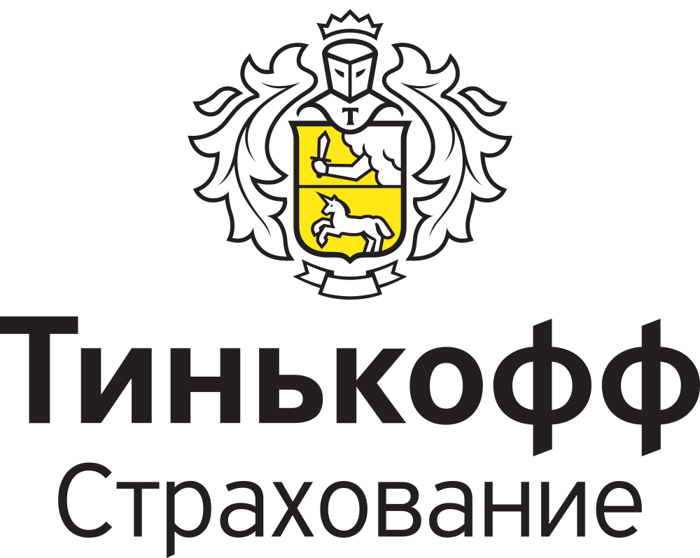

О компании Тинькофф Страхование
Тинькофф Страхование — это компания, которая специализируется на страховании и обеспечении рисков для физических и юридических лиц. Наша компания была основана в 2017 году и с тех пор мы постоянно развиваемся и расширяем свой спектр услуг.
Направления деятельности
- Страхование жизни — мы предлагаем различные виды страхования жизни, включая страхование на случай смерти, инвалидности и других ситуаций.
- Страхование имущества — мы обеспечиваем страхование имущества, включая жилые дома, автомобили, и другие виды имущества.
- Страхование рисков — мы предлагаем страхование рисков для бизнеса, включая страхование от несчастных случаев, кражи и других рисков.
Основатели и история компании
Тинькофф Страхование была основана в 2017 году группой опытных специалистов в области страхования и обеспечения рисков. Наша компания была создана с целью предоставления высококачественных услуг в области страхования и обеспечения рисков.
«Наша компания была создана с целью обеспечить безопасность и стабильность для наших клиентов» — так сказал один из основателей компании.
Миссия и цели компании
Миссия нашей компании — обеспечить безопасность и стабильность для наших клиентов, предоставляя высококачественные услуги в области страхования и обеспечения рисков.
«Мы стремимся быть лидером на рынке страхования и обеспечения рисков» — так сказали наши основатели.
Если у вас есть вопросы или вам нужно дополнительная информация, пожалуйста, не стесняйтесь обращаться к нам.